Le nostre lavorazioni.
Esplora le categorie e scopri le realizzazioni della vetreria.
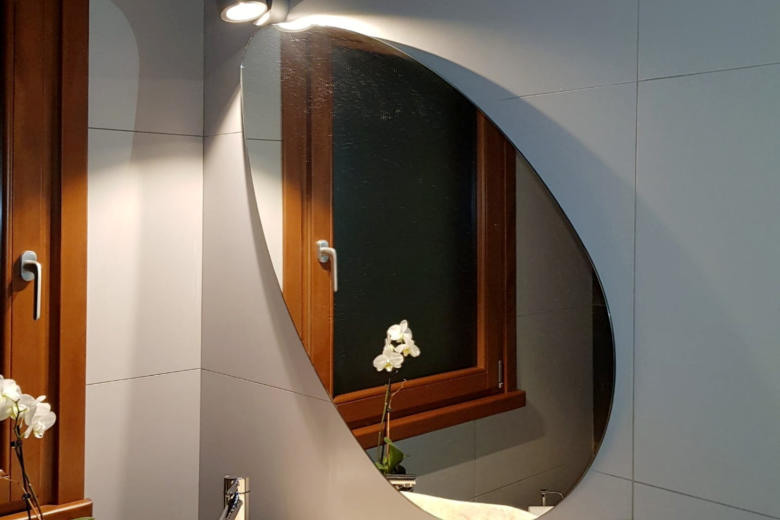
Specchi↗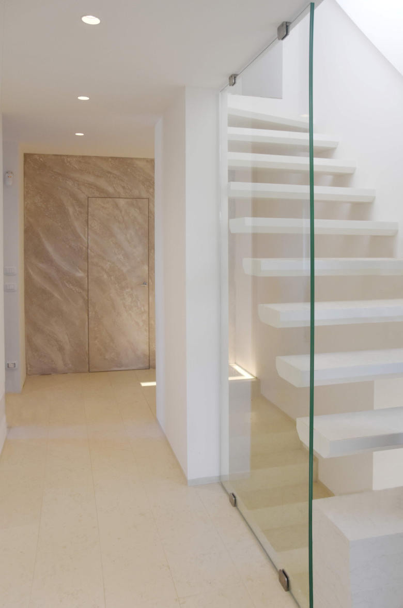
Balaustre↗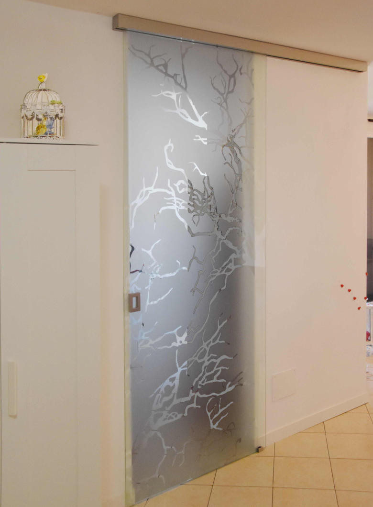
Porte interne↗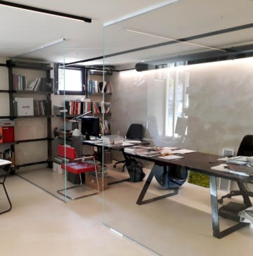
Pareti in vetro e divisori↗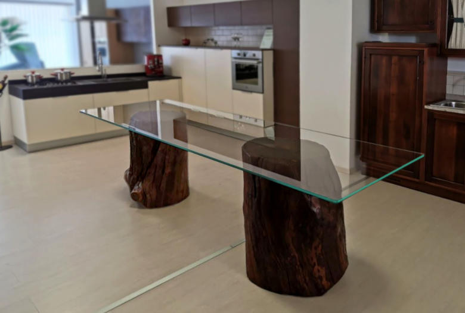
Complementi d'arredo↗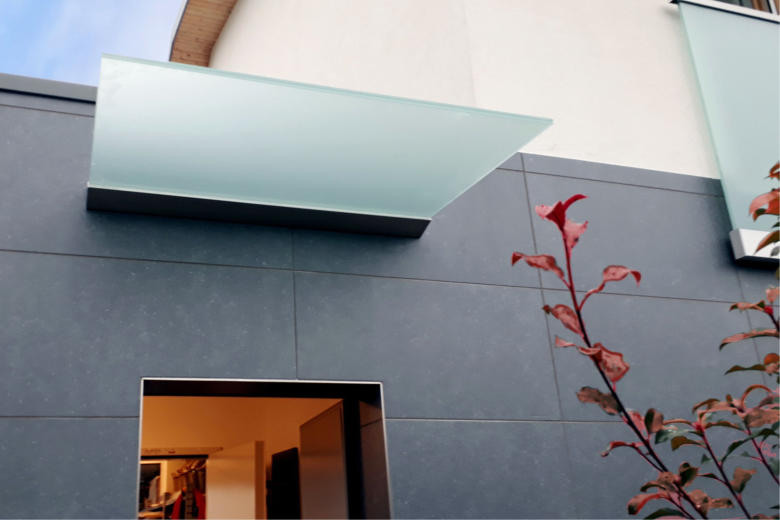
Pensiline↗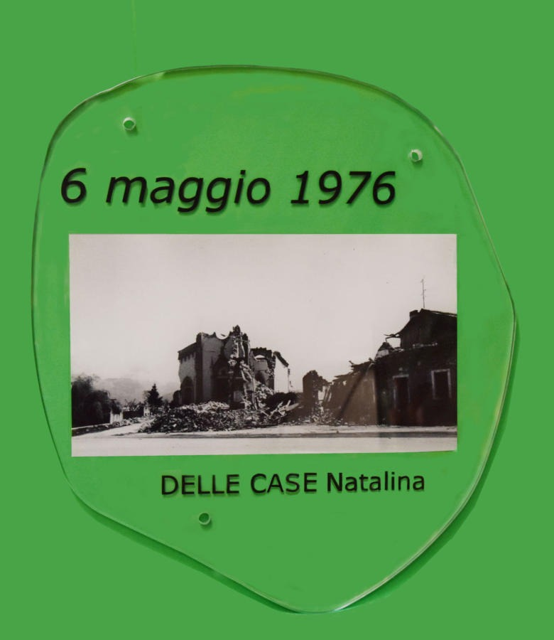
Stampa digitale su vetro↗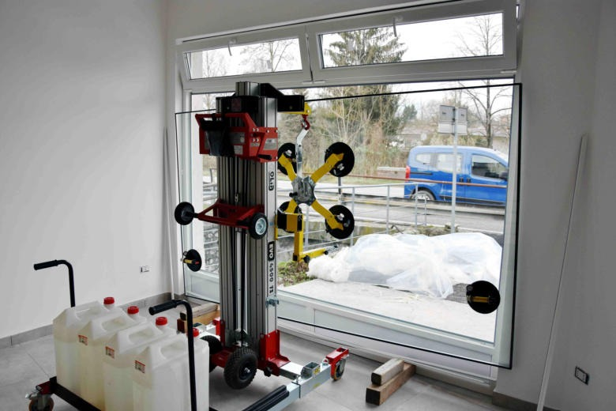
Manutenzione↗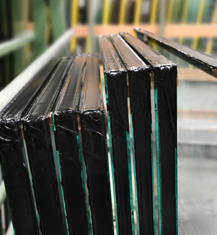
Vetrocamera e vetri speciali↗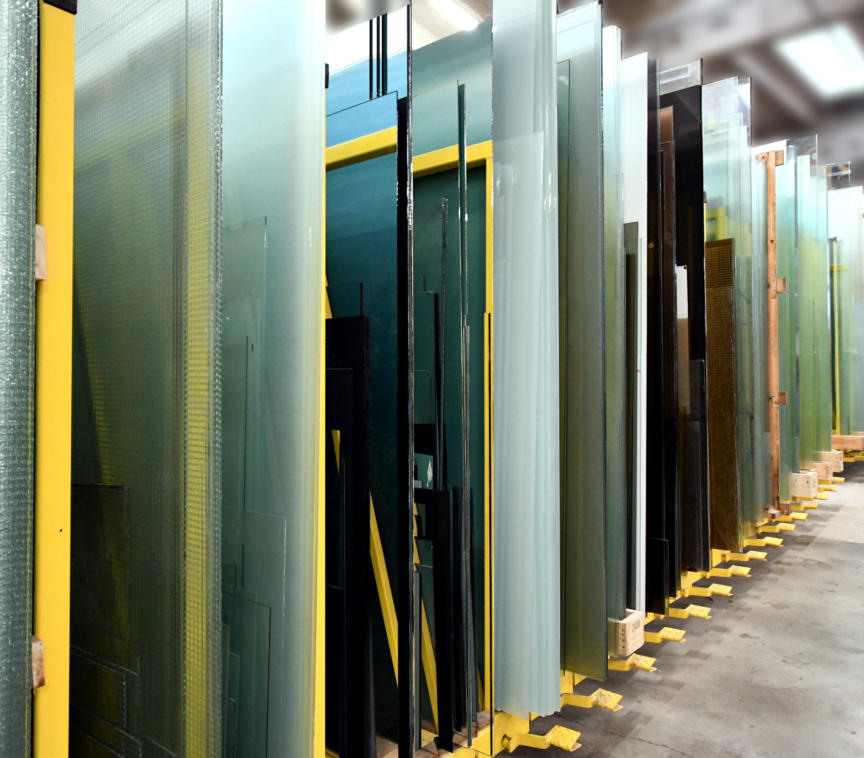
Servizi di vetreria↗Materiali, dettagli, realizzazioni.
Informazioni tecniche e fotografie delle nostre lavorazioni, organizzate per servizio.
Servizi di vetreria
Fotografie e approfondimenti sulle nostre lavorazioni.
Taglio e lavorazione del vetro su misura
Realizziamo soluzioni in vetro per ambienti residenziali, commerciali e professionali, seguendo le esigenze specifiche del progetto.
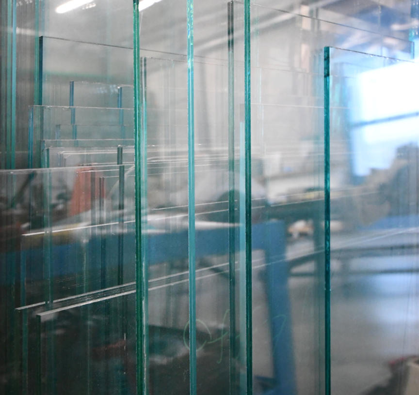
Finiture, personalizzazioni e lavorazioni per ogni progetto
Realizziamo soluzioni in vetro per ambienti residenziali, commerciali e professionali, seguendo le esigenze specifiche del progetto.
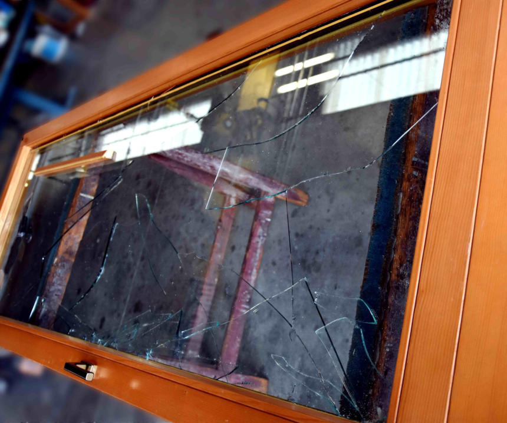
Consulenza, fornitura e posa in opera
Realizziamo soluzioni in vetro per ambienti residenziali, commerciali e professionali, seguendo le esigenze specifiche del progetto.
Vetrocamera e vetri speciali
Fotografie e approfondimenti sulle nostre lavorazioni.
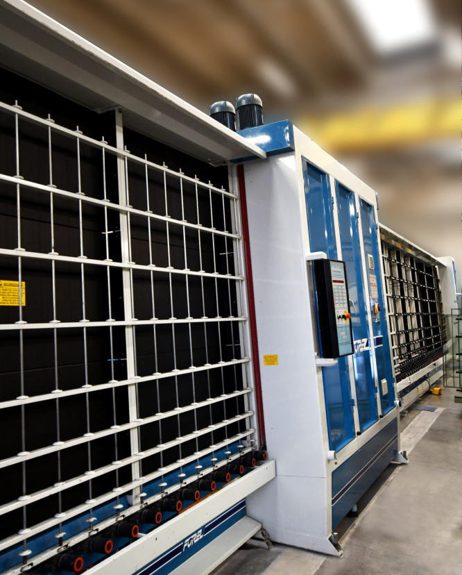
Macchina per lavaggio e pressa dei vetrocamera
Attrezzature e lavorazioni dedicate alla preparazione dei vetrocamera.
Sistema vetrocamera
Soluzioni isolanti per serramenti e superfici vetrate.
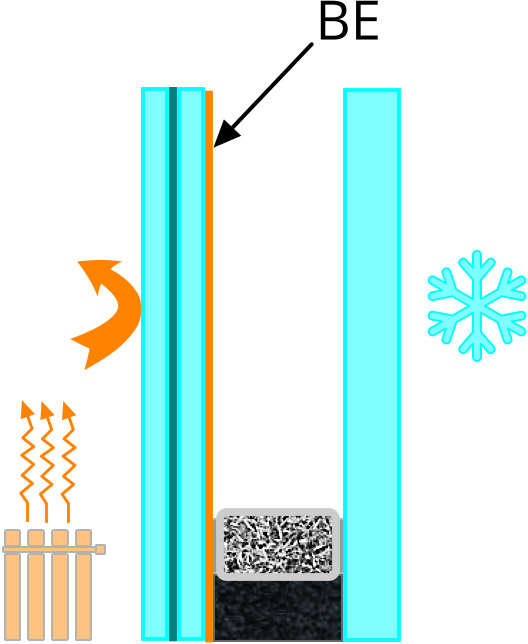
Vetro Basso Emissivo
Vetri studiati per limitare la dispersione del calore.
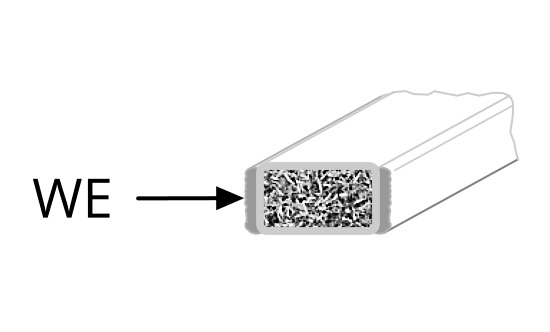
Distanziatore separatore Warm Edge
Distanziatori per migliorare il comportamento termico del bordo del vetrocamera.
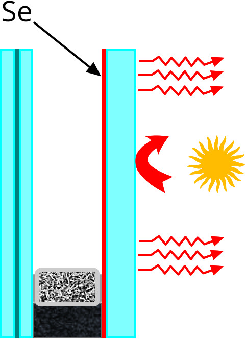
Vetro selettivo
Soluzioni per controllare l’apporto solare e la luminosità.
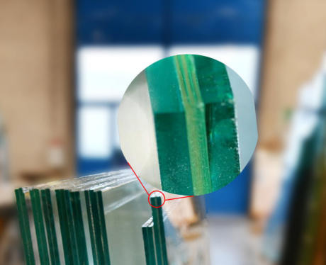
Particolare vetro multistrato 3+3.1
Esempio di composizione del vetro multistrato.
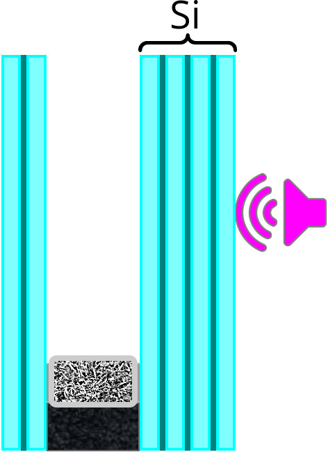
Vetri stratificati PVB e laminati
Vetri stratificati con intercalari per differenti esigenze di sicurezza e applicazione.
Specchi
Una selezione delle nostre realizzazioni.
Balaustre
Una selezione delle nostre realizzazioni.
Pensiline
Una selezione delle nostre realizzazioni.
Box doccia
Una selezione delle nostre realizzazioni.
Complementi d'arredo
Una selezione delle nostre realizzazioni.
Porte interne
Una selezione delle nostre realizzazioni.
Pareti in vetro e divisori
Una selezione delle nostre realizzazioni.
Stampa digitale su vetro
Una selezione delle nostre realizzazioni.
Manutenzione
Fotografie e approfondimenti sulle nostre lavorazioni.
Manutenzione e sostituzione vetro camera
Interventi di manutenzione e sostituzione delle superfici vetrate, valutati in base al contesto e alle necessità.
Manutenzione e sostituzione vetri in luogo pubblico
Interventi di manutenzione e sostituzione delle superfici vetrate, valutati in base al contesto e alle necessità.
Manutenzione e sostituzione vetri ambienti industriali
Interventi di manutenzione e sostituzione delle superfici vetrate, valutati in base al contesto e alle necessità.
Manutenzione e sostituzione vetri ambienti commerciali
Interventi di manutenzione e sostituzione delle superfici vetrate, valutati in base al contesto e alle necessità.
La nostra storia.
La Vetreria Dolso & Busatto nasce nei primi anni Ottanta a Povoletto, in provincia di Udine. È specializzata nella lavorazione e nel trattamento del vetro.
Nel corso degli anni ha investito nell’aggiornamento del personale e nei macchinari a controllo numerico. Offre sopralluoghi e preventivi gratuiti e interventi di riparazione e sostituzione.
Parlaci del tuo progetto ↗Parliamo del tuo progetto.
Contattaci per informazioni e preventivi.
Via Giovanni Battista Maddalena 28
Povoletto (UD)